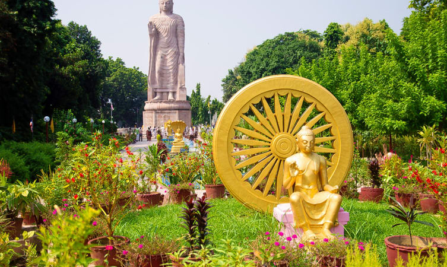
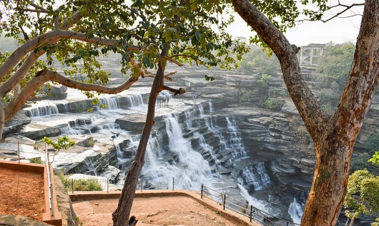
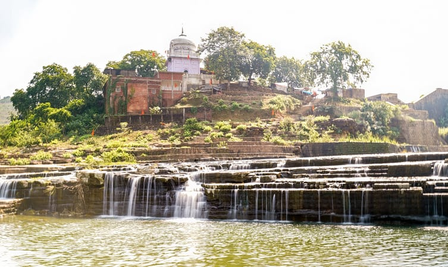
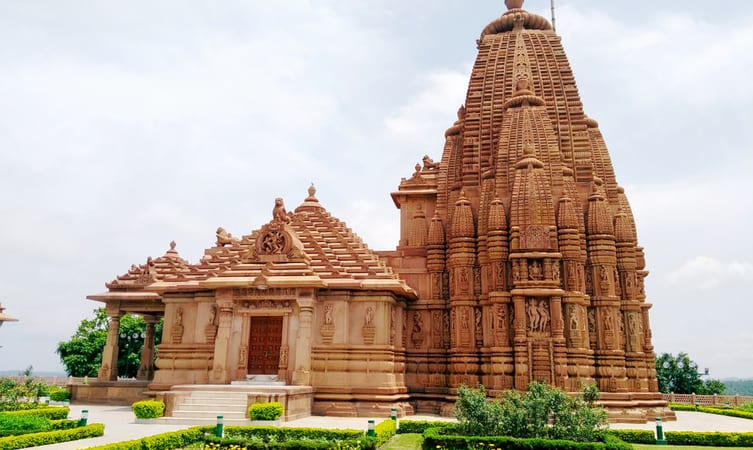
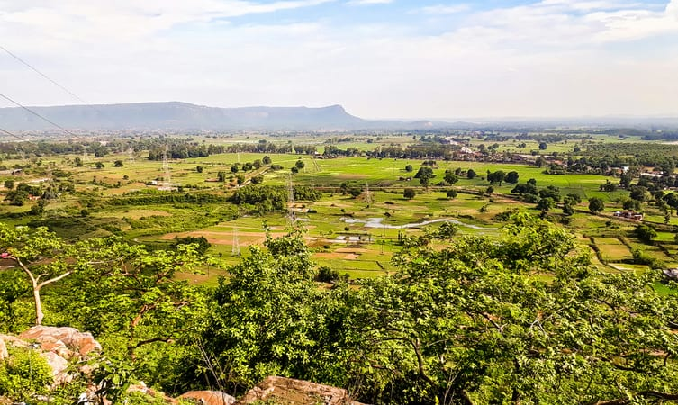
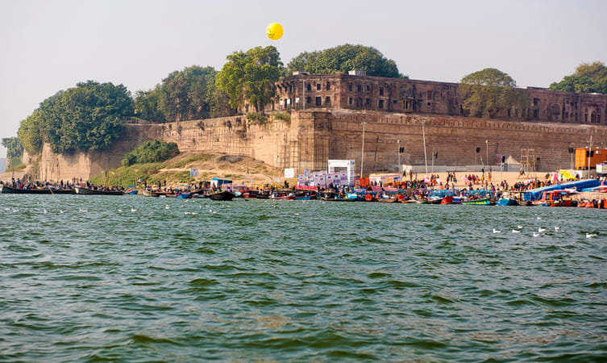
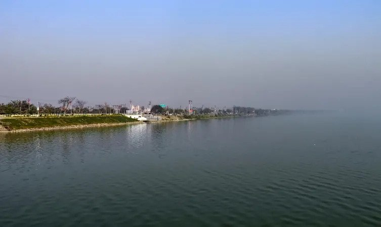
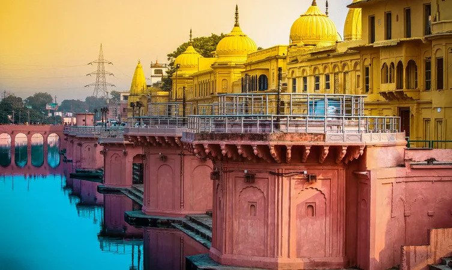
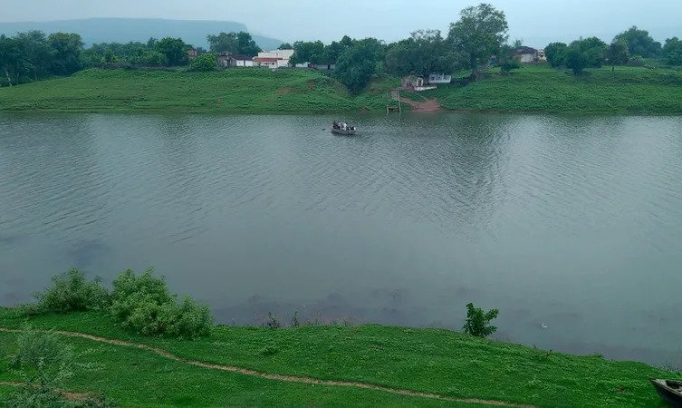
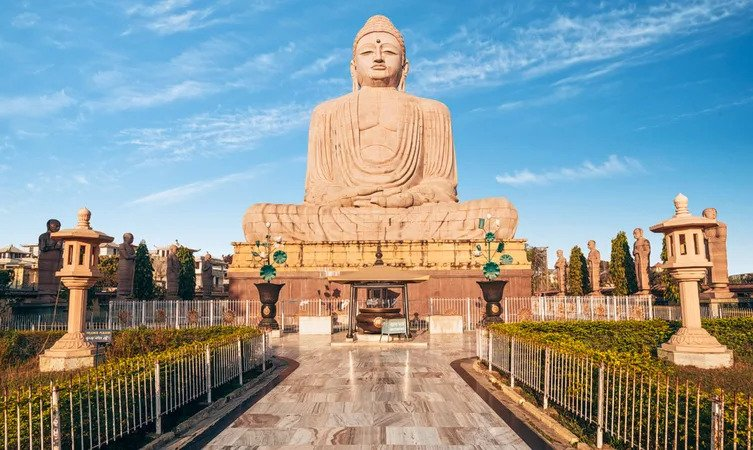

Top 10 Places to Visit Near Varanasi

Attracting a lot of tourists all year round, there are incredibly stunning places to visit near Varanasi.
Embracing various tourist destinations from wildlife sanctuaries to hill stations, Varanasi is a perfect
destination for a getaway with your friends and family. Explore the places near Varanasi on a weekend trip
or a vacation and create moments to cherish for years to come.
With abundant tourist places near Varanasi, experience an amalgamation of rich culture, religion and
history, all combined into one vacation. Fill your heart with peace and contentment while visiting
pilgrimage spots like Singhpur Sarnath and Ayodhya.
Take in the scenic surroundings at Rewa or witness the timeless beauty and architectural marvels at Agra.
Observe the splendid Islamic architecture in the City of Nawabs, Lucknow or spend some time at Mirzapur
soaked in the natural beauty, places to visit near Varanasi won’t disappoint you.
1. Singhpur Sarnath

Singhpur Sarnath is one of the most significant pilgrimage spots for Hindus, Buddhists and Jains making it
one of the most fascinating places to visit around Varanasi. According to many legends, it is believed that
Lord Buddha visited this place after his enlightenment. Filled with numerous Buddhist architecture and
heritage, Sarnath attracts tourists from all over the world. The deer park is considered to be the place
where Lord Gautam Buddha first taught the Dharma.
With different countries like Thailand, Japan, Sri Lanka, Myanmar and Tibet establishing temples in
Sarnath
according to their exotic style, tourists get a chance to experience the rich diversity of the style of
architecture from different cultures. The 80 feet standing statue of Buddha in the Thai Temple of
Sarnath is
another highlight of the place.
Best time to visit- From October to March
Distance from Varanasi- 11.2 km
Highlights- Standing Buddha Statue, Deer Park, Dhamekh Stupa, Sarnath Museum, historical sites,
architectural attractions of various cultures.
2. Chandauli

Chandauli is a noteworthy tourist destination and the town is named after Chandra Sah, a Barhaulia Rajput
who founded the town. Later, his descendants built a fort in Chandauli which is still famous among visitors.
With various scenic beauty spots, like the Devdari Falls and the rich Chandra Prabha Wildlife Sanctuary,
Chandauli is one of the most popular places to visit around Varanasi.
Within the Wildlife Sanctuary you will find several picnic spots and also two cascading waterfalls.
Other places of interest in Chandauli are the Muskhand Dam, Latif Shah Tomb, Raj Dari, Latif Shah Dam.
Best time to visit- From October to March
Distance from Varanasi- 40 km
Highlights- Devdari Falls, Rajdari Falls, Mushkand Dam, Chandra Prabha Wildlife Sanctuary, Latif Shah
Dam, Forts, picnic spots and waterfalls.
3. Mirzapur

Mirzapur is a town with a lot of history and it attracts not only tourists but also history buffs and
archaeologists. The rock paintings and the various artefacts found here are enough to prove that the
palaeolithic age existed in this region and signs of civilization here dates back to 5000 BCE. Apart from
this, Mirzapur is also famous for its scenic landscape and natural beauty.
Another claim to fame for Mirzapur are its beautiful ghats. As the river Ganges flows through this city,
there are many ghats where tourists visit to take a dip or witness the mesmerizing sunset. Mirzapur also
has a Ghanta Ghar, where a 1000 kg alloy bell hangs. Other places of interest include Ojhala Bridge,
Kali Koh, Siddhnath Ki Dari waterfall, etc.
Best time to visit- From November to April
Distance from Varanasi- 59 km
Highlights- Ghanta Ghar, Vindyachal, Ojhala Bridge, ghats, monuments, Chunar Fort and Kaal Bhairavi
Temple.
4. Sonbhadra

Sonbhadra is the second largest administrative district in Uttar Pradesh and it is home to some of the most
fascinating ancient forts, monuments and structures. It is one of the most fascinating places to visit near
Varanasi and famous for its ancient forts and rock carvings. The Vijaygarh Fort in Sonbhadra dates back to
the 5th century and it is one of the major attractions here.
This fort has some really incredible rock carvings and inscriptions of that era. Another popular fort is
the Naugarh Fort built by the Kashi Kings. The Salkhan Fossil Park has fossil exhibits that dates back
to more than 1400 million years ago. Sonbhadra has several other tourist attractions such as the Rihand
Dam, Agori Fort, Mukha Falls, Lorika Rock, Chandra Prabha Wildlife Sanctuary and Shivdwar.
Best time to visit- From November to March
Distance from Varanasi- 95.7 km
Highlight- Naugarh Fort, Vijaygarh Fort, Rihand Dam, Lorika Rock, Rock paintings, Shiv Dwar, Salkhan
Fossil Park and Agori Fort.
5. Kaimur

Kaimur was an important part of the Magadha Empire and played a major role during the Freedom Struggle. Now
it has evolved into a wonderful holiday destination and one of the most fascinating places to visit near
Varanasi. Kaimur has a whole plethora of attractions for its visitors ranging from forts, temples, gushing
rivers and cascading waterfalls, dense forests and scenic picnic spots.
It also plays hosts to several festivals and fairs with devotees and tourists visiting in hordes. One of
the major attractions here is the Maa Mundeshwari Devi Temple which is dedicated to Lord Shiva and dates
back to 108 AD.
Best time to visit- From October to March
Distance from Varanasi- 97.4 km
Highlight- Mundeshwari Temple, Baidyanath Temple, Kaimur Wildlife National Park, Karkat Waterfall,
Bhabua, Ramgarh and Adhaura.
6. Prayagraj

Being one of the largest and most populated cities of India, Allahabad or Prayagraj is well known for its
magnificent architecture from the Mughal Era. Prayagraj is one of the oldest cities in the world and it
attracts hordes of tourists all year round. The most fascinating place to visit in Allahabad is the Triveni
Sangam, which is the junction point of three rivers- Ganga, Yamuna, and Saraswati.
This place is of high religious importance in Hinduism and is considered to be the site of offering
sacrifice. Other important sites are, the Khusro Bagh, a tombstone built by King Jahangir for his son
Khusro, the Ananda Bhawan, Allahabad Museum, Allahabad Fort, Allahabad Planetarium and many more.
Best time to visit- From October to March
Distance from Varanasi- 120 km
Highlights - Khusro Bagh, Triveni Sangam, Kumbh Mela, Allahabad Museum, All Saints’ Cathedral,
Allahabad Fort and Alfred Park
7. Gorakhpur

Gorakhpur is a vibrant city in the eastern part of Uttar Pradesh. It is famous for its rich culture, vibrant
surroundings, Buddhist, Jain and Hindu religious sites and Heritage sites. Gorakhpur was one of the 16
states, also known as Mahajanapadas, that existed in India right from the 6th century BC.
One of the biggest claims to fame that Gorakhpur has is the Gorakhpur Press that publishes the Bhagavad
Gita. Gorakhpur, like many other famous towns and cities in India, has several beautiful temples. One of
the most popular one is the Gorakhpur Temple. Another major attraction here is the Rail Museum that
showcases the journey of the development of trains and train travel in India.
Best time to visit- From November to March
Distance from Varanasi- 190.1 km
Highlight- Gorakhpur Temple, Rail Museum, religious heritage sites, museums, ancient monuments and
vibrant market places.
8. Ayodhya

Ayodhya is regarded as one of the seven most important pilgrimage sites for Hindus and thus attracts
tourists from all over the world. Being the center of the epic Ramayana, Ayodhya boasts of the rich
mythological culture it holds. There are multiple ghats located in Ayodhya on the banks of the Ghaghara
River. Not only Hinduism, Ayodhya is also a base city for many other religious groups such as Jains,
Buddhists as well Islam.
Some of the places of interest in Ayodhya are Sri Vijayaraghavaji Temple, Hanuman Garhi Fort, Ramkot,
Nageshwarnath Temple, Angad Tila, Darbarji Durgakali Temple and many more. Some believe that the
legendary princess Heo Hwang-ok was a native of Ayodhya and a memorial dedicated to the Queen was built
in Ayodhya in 2001 and remains an important attraction for travelers from Korea as well as other parts
of the world.
Best time to visit- From October to March
Distance from Varanasi- 202.4 km
Highlights- Angad Tila, Sri Vijay Raghav Ji Temple, Sita ki Rasoi, Heo Hwang-ok Memorial, Temples,
Buddhist vihara and Ram Janmabhoomi Temple.
9. Rewa

Rewa is a wonderful blend of scenic natural surroundings and spectacular man-made attractions. It is filled
with some of the most interesting and intriguing museums, forts, historical villages, tiger reserve and
breathtaking landscape. Rewa is also famous for being an ideal home for the majestic white tigers.
Some of the highest and most spectacular waterfalls are also found in Rewa. Some of the most scenic ones
are Bahuti, Purva and Keoti waterfalls. It is also home to some of the most ancient monuments,
sculptures and carvings such as the reclining Bhairav Baba Statue.
Best time to visit- July to September
Distance from Varanasi- 221 km
Highlight- Forts, Temples, Monuments, White Tiger Safari, Viyankat Bhawan, Baghela Museum, Bhairavnath
statue, the Royal Museum, Teonthar and the Govindgarh Palace.
10. Bodhgaya

Bodhgaya is one of the four most significant Buddhist religious sites and an important pilgrimage
destination. Lord Buddha gained enlightenment under the Mahabodhi Tree here and Bodhgaya itself has been
declared a UNESCO World Heritage Site. The most interesting attractions here are the various temples and
shrines built by countries like Nepal, Vietnam, Thailand and others.
All these temples and shrines depict the different architectural styles of these countries making
Bodhgaya one of the most interesting places to visit near Varanasi.
Best time to visit- From October to March
Distance from Varanasi- 242 km
Highlight- Mahabodhi Tree, Buddhist Temples, shrines and monasteries, Museums, Thai Monastery,
Vietnamese Temple, Mahabodhi Temple and religious fairs and festivals.